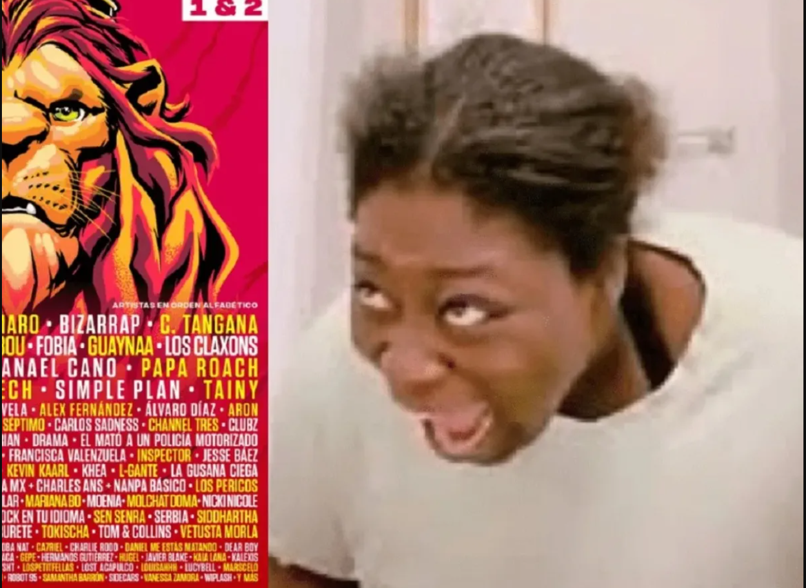

Fueron mas de 100 artistas al festiva. Artistas como Tame Impala y Foo Fighters cerraron cada quien uno
de los dias con shows magnificos. Repartidos en 9 escenarios cada artista dio un show de
30 minutos a 1 hora en excepción de los principales que tocaron por 1 hora y media.
Foo Fighters cerro el primer día recordándonos de donde viene la leyenda, merecedora de entrar dos veces
al salón de la fama, Dave Grohl. Tame Impala nos enseño lo esencial que son los efectos visuales y lo
psicodélicos que son con un show espectacular y lleno de luces, lasers, fuego y humo.
imagen del escenario y la gente en multitud en el concierto
Lista de Artistas
02/04/2022
En esta lista me gustaría compartirles mis top 10 shows de todo el festival.
Voy a considerar en primero la música, es decir el ambiente y la emoción que brindaba.
En segundo los efectos visuales que son una parte esencial del show.
En último, voy a tomar en cuenta la interacciones entre el artista y el público.
Dany Ocean
The Cooks
Chet Faker
El Tri
Juanes
Alejandro Fernández
Galantis
Boy Pablo
Foo Fighters
Tame Impala
Video del Pal'Norte
02/04/2022
En este concierto, Tame Impala llego a mexico de su tour. Presentando su nuevo album "the slow rush" alrededor del mundo
Tame Impala fue el que cerro el festival con este show, y empezo con esta cancion llamada elephant.
Ha sido el show que más me a gustado, tiene unos efectos de primera clase y su ambiente esta cañon.
Subtemas
02/04/2022
Comida Dentro del Festival
Quisa creeras que comer en un festival sea desagradable e incomodo. En el Pal'Norte, implementaron unos pasillos donde
casi 50 food trucks se encontraban de todo tipo de comida. Desde comida callejera y barata hasta comida de la mejor calidad.
Aunque no solo eso, si no postres, restaurantes y de todo.
Ademas de los food trucks, tambien esta el famoso pasillo del postre. Donde encontraras de todo tipos de ricos postres de todo tipo
de lugar. Tambien, la zona VIP tiene sus propios restaurantes privados donde puedes comer para descansar de los shows.
Ya sabemos que hay de todo tipo de lugares en donde comer en Pal'Norte, pero ¿es comodo? Claro, no solo hicieron estos pasillos de food trucks
postres, pero tambien hay una zona entera con bancas y mesas donde te podras sentar con tus amigos para disfrutar de lo que hayas pedido.
Pero no te preocupes de perderte algo, la zona esta llena de pantallas donde puedez ver los shows del escenario mas grande.
Los Mejores Años para el Pal'Pal´Norte
El festival empezo en el 2012, poco a poco fue creciendo hasta ser lo que es hoy. Su tercer mejor año ha sido el 2015
consiguiendo hasta 6 escenarios donde en cada unos se tocaron mas de 10 horas de musica. En total mas de 70,000 personas asistieron para
a mas de 40 artistas, entre ellos Imagine Dragons y Florida.
Con una racha de tres años buenisimos para el Pal'Norte seguidos, el 2017 toma el segundo lugar gracias al grandioso line
up que obtuvieron para ese año. Siendo el artista principal, The Killers, cerro ese año con 2 horas de show convirtiendolo el artista
mas famoso que habia pisado el pal norte. Ademas de que tambien fueron artistas de la talla como Mana, Enanitos Verdes, entre otros.
Pasaron los años y llego la pandemia, pero el Pal'Norte regreso contodo incluso con el Covid de adversario. En el 2021
se retomo el Pal´Norte y trajeron a uno de los mejores line ups de la historia del festival. Artistas de la talla como Tame Impala con un
increible y tambien como Foo Fighters con una historia hiper reconocible.
Otros Festivales
Pal'Norte es un buen festival pero no es el mejor en el mundo. Coachella es uno de los conciertos mas grandes donde se
presentan los mejores artistas del mundo actual. Su cede es Indio, California, gracias a esto que esta a lado de la ciudad de las estrellas
miles de celebridades visitan este festival teniendo un ambiente muy bueno.
En Chicago, en el parque Grant Park, anualmente se presenta el festival Lollapalooza. Siendo este mi festival favorito, ya
su cede es Chicago, pero el parque es enorme y al igual que coacella, es un festival de mucho prestigio. Se presentan artistas influyentes
del punk, rock, hip-hop, indie, alternativo y muchos otros.
Pal'Norte no es el unico festival en Mexico. En la Ciudad de Mexico, se da igual, anualmente, el festival Corona Capital.
Siendo este el festval de musica de mas prestigio en Mexico. Artistas de toda la talla van a este festival y han tenido fechas donde asistieron
hasta mas de 200,000 personas.
Mi Video
02/04/2022
Momazo Pal´Norte
10/04/2022

Páginas Relacionadas
02/04/2022
Si gustan más información sobre el tema, les dejo enlaces a páginas de grande prestigio.
Aquí debajo encontraran enlaces de paginas que yo utilice para crear este documento
al igual que paginas que te ayudaran mucho por si quieres empaparte un poco mas acerca del tema.